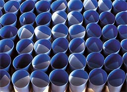
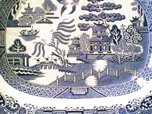

| A Problem With Cobalt?
Article by Jeff
Zamek, author of Safety
in the Ceramics Studio & What
Every Potter Should Know.

Piet
Stockmans, '100 Vases' exhibition Sotheby's (London,
UK), 1998. Stockmans is well known for his exclusive and innovative
use of cobalt blue. Website: http://www.pietstockmans.com |
Cobalt oxide and cobalt carbonate are ceramic raw materials
widely used by potters. They are frequently found in glaze and
slip formulas contributing, under varied circumstances, a light
to dark blue color depending on the amount employed. Cobalt
has traditionally been used as a decorative blue colorant in
everything from Chinese porcelain to American salt glazed stoneware.
However, its use today reflects a wider problem potters face
when employing any ceramic raw material. The dilemma is not
with the specific raw material but with the lack of pertinent
health statistics relating to the effects of ceramic raw materials
on potters. The available statistics are based on industrial
populations of workers whose exposure and duration rates are
significantly different from potters working in craft centers,
schools, and private studios. In the wider economic world large
industries have the incentive and money to assemble and document
health problems associated with the workplace. There have been
numerous statistical records in commercial areas such as mining,
paper production, and metal industries as to the effects of
raw materials on workers. From the data obtained many procedures
have been enacted for the safe handling of raw materials. |
There is also an economic incentive for industry to protect its
workers to prevent potential litigation. This is not the case with
the population of individual potters who have no economic resources
for such health related documentation. A central question that has
not been addressed is: can an accurate extrapolation of industrial
statistics be applied to potters who have lower exposure and duration
rates?
Based on the lack of health and safety statistics as they relate
to the small population of potters can it be possible that ceramic
raw materials will become the next “asbestos type” material
for potential litigation? Society in general has become more litigious,
a description for taking legal action over a real or imagined injury
to a person or damage to property. It is not surprising that this
mania has inevitably come to the field of ceramics. It is present
even in lawsuits generated from customers scalding themselves from
a hot cup of coffee. The economic reactions to lawsuits, or even
the possibility of lawsuits, can have a negative effect on ceramics
suppliers and eventually on potters who purchase ceramics equipment,
supplies, and raw materials. Ceramics is a small industry. In fact,
the term industry really does not apply to ceramic supply companies,
equipment manufacturers, glaze companies and clay producers who
sell to potters involved in this creative activity. For the most
part ceramics supply companies are staffed by few employees, and
the potters to whom they sell to are individual craftsmen. With
such a small market for goods and services, any negative influence
on profit margins can have large penalties for producers and consumers
of raw materials. Larger industry has the capital and personnel
to bear the possibility of legal actions regarding their products
or services. Ceramics supply companies do not have staffs of lawyers
or high profits to pay for any type of legal action that a raw material
complaint might produce.
Not only can an individual potter be sued but a ceramics supplier
can conceivably be named as party to a law suit for selling items
to the potter that caused the eventual user real or imagined harm.
For example, if a potter sells a coffee cup with a glaze containing
cobalt carbonate and the user claims the glaze transferred harmful
amounts of cobalt into their body, a problem can exists on many
levels. Conceivably the potter who made the pot and the ceramics
supplier who sold the raw materials used in the pot could be named
in the lawsuit. Such lawsuits are going after “deep pockets”,
or defendants who can afford to pay damages. Depending on the circumstances
of the case a party can be dropped from the suit, but the process
does require a lawyer who expects a fee for services. Defending
against a potential or actual lawsuit can be an expensive and time-consuming
process for any individual or business. Aside from the costs involved
in such actions, the tangible area of liability has to be evaluated
as to the declared damage inflicted on persons or property. Most,
if not all, ceramic supply companies and individual potters would
not knowingly allow a situation to exist where a product could inflict
damage or illness on their customers, but good intentions have little
to do with the factors driving litigation. Even if negligence cannot
be assigned, the time and cost to defend oneself is considerable.
In many instances even if the case does not go to court legal fees
are incurred.

Spode Willow Pattern in Cobalt Blue |
During the past few years, there has been a steadily increasing
amount of conjecture and embellished claims concerning the use
of raw materials by potters. Many undesirable things can grow
in a climate of ignorance and speculation. Ceramic raw material
toxicology has become increasingly subject to exploitation and
misunderstanding by the uninformed and misguided. Ignorance
of ceramic raw materials by the legal profession and exploitation
by individuals who make their income from distorting data has
increased in the past few years. This disturbing trend is in
part due to the revenue potential associated with any form of
litigation. A steady flow of articles has been published warning
of new ceramic “poisons of the month.” The topic
of health factors relating to ceramic materials has attracted
alarmist “experts” with access to undiscriminating
print media. Rather than counter such biased reporting knowledgeable
potters and centers of ceramic learning have consistently remained
silent. |
While it is understandable that individuals cannot access the
resources to scientifically counter misconceptions regarding ceramic
materials, it is inexplicable why places of “higher learning”
have not undertaken ceramic related health studies to counter false
claims and rumors. Research studies on the effects of ceramic raw
materials as pertaining to potters are not to be found in colleges
offering ceramics. They are frequently introspective institutions
looking only toward their own activities and not to the wider population
of potters.
Cobalt
Reliable deposits of cobalt are currently mined in Canada and Southern
Africa. It is extracted as a by-product of nickel ore mining. Cobalt
carbonate (CoC03) and the stronger cobalt oxide (Co02)
are metallic coloring agents that have been employed by potters
throughout the history of pottery making. It can be found as a decorative
element in the earliest 12th century salt glazed ware produced in
Germany. Individual artist potters in the United States have been
using cobalt in both forms for over fifty years. Cobalt will produce
stable blues in oxidation and reduction kiln atmospheres at various
temperature ranges. It is one of the most potent colorants and produces
a strong blue when added to slips, glazes, and overglaze/underglaze
washes. One part of cobalt can tint 100,000 parts of a glaze or
slip. This widely used metallic coloring oxide can also generate
a range of blues and black in clay bodies. Cobalt can also be found
in many commercial glazes, stains, and underglaze colors; large-scale
industrial uses of cobalt occur in the formulation of steel and
chromium alloys.1
A recent court case concerning cobalt carbonate has come about
by a confluence of specific events driven by greed, ignorance and
an atmosphere of misguided consumer protection. As in most accidents,
a series of individual actions aligned themselves in such a way
as to produce a flawed outcome for everyone involved. Eventually,
ignorance of ceramic raw materials by laymen and “experts,”
along with the legitimate health concerns of a potter, were brought
together with lawyers who did not do their homework.
|
The Potter
A semi professional potter with over twenty years experience
producing high temperature functional pottery in a garage
studio claimed to have contracted cobalt poisoning. The potter
used approximately 5 lbs. of cobalt carbonate every four years
in various overglaze washes, glazes, and a blue slip. The
slip formula contained two tablespoons of cobalt carbonate
to one cup of slip. It was applied by a brush “spattering”
method to green ware. Cobalt slip was loaded onto the brush
and flicked onto the pots. The floor of the pottery studio
was exposed to the excess cobalt slip from mixing and application
operations. A glaze containing 3% cobalt carbonate was mixed
in thirty-gallon containers, which were refilled every three
years. The glaze was applied by dipping or pouring it on the
bisque pottery. The potter glazed 6-8 hours a day 5 days a
week for a 5-month period every year. An overglaze wash containing
60% cobalt carbonate was also brushed over some glazes. The
slips, glazes, and overglazes were applied to a clay body
which was mixed in the studio. All the pots were fired in
a 30 cu./ft., sprung arch downdraft kiln to cone 9 (2300 F.).
The potter has been a pipe smoker for thirty-three years using
approximately 30 pipe fills of tobacco a day. He also consumed
approximately four litters of diet soda a day. He ate, drank,
and smoked in the ceramics studio, which was cleaned periodically
with a garden hose.
|
Large Three-legged Nabeshima
Platter depicting a Snowball Fight (in Underglaze Cobalt
Blue). Japan, Genroku Period, (1688-1703)
|
The Symptoms

Applying underglaze blue pigment to a large
bowl in Jingdezhen, China.
|
After noticing symptoms of fatigue, gastrointestinal problems
(acid reflux), muscular pain in all major joints, shaking when
fatigued, depression, anxiety attacks, headaches, sore mouth,
scalp irritation, poor sleep, and prolonged infections, he visited
his local doctor. After examinations by several physicians,
he was placed on a number of medications to relieve the symptoms
that had been developing over the last fifteen years of working
in his pottery studio. On one of his visits to another doctor
who happened to have taken a pottery course, it was suggested
he might have developed heavy metal poisoning from the cobalt
used in his studio. A hair sample was taken and it was found
to contain cobalt. He was informed it was also possible that
the range of his medical problems fit many of the symptoms associated
with cobalt poisoning. At this time, the potter was given over
ninety-five chelation treatments, which are used to draw out
heavy metals from the system. The potter also did a significant
amount of research on the Internet believing his symptoms fit
cobalt poisoning. |
He then went to the Mayo Clinic in Rochester, Minnesota and was
evaluated by a number of medical specialists including internists,
neurologists, gastroenterologists, rheumatologists, psychiatrists
and a physician specializing in occupational medicine. Their findings
did not indicate heavy metal poisoning. Significantly, blood and
urine tests were negative for heavy metal poisoning, but a test
did indicate an abnormally high level of arsenic in his blood. However,
one doctor did tell him “symptomatically” his aliments
fit cobalt poisoning, but this opinion was unsupported by the medical
facts of the case. In fact, the symptoms for cobalt poisoning are
characterized by functional effects on the ventricles and enlargement
of the heart (cardiomegaly). There are no demonstrated musculoskeletal
or neurologic effects as a result of exposure to cobalt. Gastrointestinal
effects primarily from ingestion include, nausea, vomiting, and
diarrhea.2
The Trial
The potter claimed he contracted cobalt poisoning because the ceramic
supply company, which sold the cobalt carbonate, did not list safety
instructions and precautions on the packages he purchased before
1998. His purchases of cobalt carbonate after that year did have
safety information but he claimed the labeling was not adequate
to inform him of the potential hazards when using the material.
In the petition for damages filed by the potter’s lawyer’s
they claimed the cobalt product sold to the plaintiff as designed,
constructed, assembled, manufactured and distributed was defective
and unreasonably dangerous when put to a reasonably anticipated
use. At some point in the presentation his claim was extended to
include manganese and arsenic poisoning because the initial test
of the cobalt carbonate sample contained arsenic and 5.6 parts per
million of manganese as trace materials.
The Potter’s Position
The potter alleged he was unable to earn a living and could not
work as a result of the ceramics supply company’s negligence
due to insufficient labeling of their product, cobalt carbonate,
which also contained manganese and arsenic. He had stopped making
pottery, which he believed was the cause of his health problems.
The potter wanted compensation for economic and pecuniary harm,
including, but not limited to, past and future medical bills and
expenses and past and future lost wages and income. It was further
claimed he suffered and will continue to suffer pain, emotional
and psychological harm and distress and loss of enjoyment of life.
He believed his symptoms were directly related to the cobalt carbonate
contained in his slips and glazes. The claim for damages was in
excess of 5 million dollars.
The Ceramics Supply Company’s Position
The ceramics supply company’s position was that the safe
use of any ceramic raw material was in part the responsibility of
the user to inform himself of the health and safety procedures needed
when working in the field of ceramics. Based on the potter’s
education and training he should not have been eating, smoking or
drinking in his studio. Most significantly, they claimed the potter
did not have cobalt, manganese or arsenic poisoning since his extensive
medical examination did not indicate such a diagnosis. However,
the ceramics supply company was not required to prove what illness
or illnesses the potter was suffering from since the onset of his
symptoms. Additionally, several physicians and toxicology experts
in environmental medicine testified that the potter’s history
of symptoms did not indicate poisoning form any heavy metal, with
one physician speculating that the symptoms could be caused by the
array of drugs he was taking for unrelated illnesses.
Evidence was also presented by the ceramics supply company’s
lawyers that demonstrated cobalt, manganese and arsenic poisoning
was not found in the population of potters. Previously, this information
had been based on anecdotal reports accumulated over fifty years
by individual potters and informal surveys taken at the National
Council on Education for the Ceramic Arts (NCECA)
annual meetings. A statistically accurate study of potters and their
use of raw materials was sponsored at the 2000 NCECA meeting. The
Potters Health & Safety Questionnaire was issued to all participants.3
The questionnaire was also listed on the Internet and was available
at ceramic supply companies throughout the United States. The results
of the survey indicated the four most serious health problems potters
encounter in their studios are back pain, carpal tunnel syndrome
(repetitive motion), cuts (from glaze shards) and burns (from reaching
into hot kilns). While a small percentage of potters reported illnesses
attributed to raw materials, a search of the National Library of
Medicine data banks and other medical libraries did not reveal any
diagnosed cases of potters contracting cobalt, manganese or arsenic
poisoning.
Duke University Medical Center, Department of Community & Family
Medicine, Division of Occupational & Environmental Medicine
had reported that the original cobalt carbonate sample was reanalyzed
using a test of greater accuracy and that it did not contain arsenic.
Furthermore, it was determined that the hair sample taken from the
potter, which was reported as having high concentrations of cobalt,
was within normal limits for the general population.
The most significant finding, of which potters should take note,
occurred at Duke University’s Medical Center for Occupational
& Environmental Medicine. The potter’s actual glaze and
slip formulas were tested for respirable and ingestible concentrations
of cobalt. The exposure assessment was conducted under controlled
conditions duplicating the poor ventilation found in the potter’s
studio. The exposure to cobalt was tested by a modeling technique
where each activity was carried out duplicating the actions of the
potter in his studio. The glaze and slip formulas were mixed and
applied in the same “spatter” technique as used by the
potter. Respirable exposure and ingestion levels were calculated
for an average adult male based on the mixing operations in the
potter’s studio. Test results determined, even allowing for
a combination of incidental additive ingestion and inhalation in
cleaning, mixing, and glazing activities, daily absorption of cobalt
would be in the range of 170-945 micrograms per day. The levels
of cobalt the potter was exposed to in his studio were the same
as in the general population in the United States. This was reflected
in testing hair, blood, and urine, values which fell within the
normal range. A risk assessment for cobalt found no adverse effects
in humans at exposures of 3400 micrograms per day.4 The assessment
of the potter’s studio by Duke University’s Medical
Center for Occupational & Environmental Medicine is believed
to be the first documented case of cobalt material toxicity testing
in a private ceramics studio.
Aside from the environment, the general population is exposed to
cobalt from many occupational and consumer sources. The most significant
source of cobalt is found in food and drinking water. Food ingestion
alone can average 5-100 microns per day. Drinking water levels can
average from 2 micrograms per liter to 107 micrograms per liter
per day. Background cobalt air levels can range as high as 0.61
micrograms.5 In addition cobalt is found in vitamin B12. A typical
multivitamin contains 4 micrograms of cobalt in the form of B12.6.
Cobalt is a necessary element, with background exposures from vitamin
preparations, water and food in the range of 30-37 micrograms per
day.
The Verdict
The trial was held in the potter’s hometown and lasted six
days. After reviewing the testimony of the ceramics supply company’s
expert witnesses, the potter’s expert witnesses and the potter,
twelve jurors took less than three hours to reach a verdict in favor
of the ceramics supply company.
The Impact
The court of law can be an imprecise instrument for solving ceramics
related toxicology questions. It is simply the wrong tool for determining
the health and safety factors associated with the potter’s
use of ceramic raw materials. This case represents several related
issues concerning the current realities in ceramics. First and primary
is the potter’s past and current health and the debilitating
symptoms that he is experiencing. An inaccurate assessment by himself
and others has caused a delay in the correct medical treatment of
his illness. If nothing else, the medical evidence submitted at
trial should eliminate cobalt, manganese or arsenic poisoning as
the possible causes for his symptoms. Hopefully, the information
presented will direct him to the correct diagnosis and treatment.
The economic impact of the trial on all parties was extensive.
Preparation and research for the trial and payment to expert witnesses,
in addition to legal and court fees, were substantial. The cost
to the ceramic supply company, which is essentially a small business,
caused a revision in its selling practices to prevent future litigation.
The adjustments will not appreciably increase the safety margins
to workers or customers but will increase the costs to customers.
Even though the ceramics supply company defended itself successfully
many companies will eliminate raw materials and services which might
cause legal problems. Such preemptive tactics will not serve potter’s
health interests and will not protect ceramics supply companies
from litigation. The economic balance between safe handling and
selling of ceramic materials and reducing legal exposure to lawsuits
depends in part on access to expert technical advice, which many
ceramics companies cannot afford. Defending against this type of
litigation for the ceramics company, no matter what the outcome,
was a battle that need not have taken place.
A legitimate array of physical symptoms by the potter, which led
to a hair sample test for cobalt, caused the potter to seek legal
action. When the symptoms did not match cobalt poisoning, manganese
and arsenic poisoning were claimed to be the causes of the potter’s
health issues. While the cobalt carbonate used by the potter did
contain 5.6 parts per million of manganese (trace amounts) it did
not possess arsenic. Unfortunately, what was needed at the onset
of contemplated legal action was not present, namely knowledge of
ceramic materials and their toxicological effects on potters. Without
this understanding, a course of action was taken, giving an economic
incentive for the potter and his lawyers to move proceedings along
even when the medical facts did not line up with the physical symptoms
of the potter. Once the legal mechanism was underway the cost in
time and money for both the defendant and plaintiff started to accrue.
No one is arguing for less stringent safety procedures in selling
raw materials, accurate labeling, or potters adhering to their own
studio safety measures. Anything that will promote safety in ceramics
should be considered, even though raw materials used by potters
have had a good safety record. One step in learning about raw materials
can take place when potters request from their ceramic supplier
a Material Safety Data Sheet (MSDS) for every raw material they
purchase. It contains useful information such as the chemical name,
chemical family, hazard class, formula, occupational exposure limits,
emergency first aid procedures, waste disposal, respiratory protection,
and precautions for handling and storage. Each category of information
will help the potter establish safety guidelines for raw material
handling procedures within their studio. In order to reach a wider
audience of potters courses in material safety should be part of
every college ceramics and craft center curriculum.
Raw materials can be handled safely with the proper barrier methods
of protection such as National Institute for Occupational Safety
& Health (NIOSH) approved respirators, kiln viewing goggles,
rubber or latex gloves, and high temperature kiln gloves, to name
a few items that should be utilized consistently by every potter
in their studio. Raw materials, as used by potters in their studios,
have a remarkable safety record considering the varied safety procedures
used and not used by potters over the years. There is no room in
the ceramics studio for ignorance or misconceptions about raw materials
that we as potters come into contact with on a daily basis. When
cobalt was placed on trial, it highlighted several areas of future
concern for the ceramics community. Ignorance of the toxicological
effects of raw materials caused a false diagnosis, which initiated
a rush to litigation. The trial caused an economic loss for the
potter and the ceramic supply company without an acceptable solution
for either party. A lack of knowledge almost perpetuated an incorrect
assessment of cobalt carbonate for the pottery community.
Article © Jeff
Zamek.
Footnotes:
- Hamer, Frank, The Potter’s Dictionary
of Materials and Techniques, Fourth Edition, A&C Black Publishers
Limited, pages 64 & 65.
- Myerson, S. Ross, MD, MPH, Myerson Occupational
& Environmental Medicine, P.C.
- Zamek, Jeff. Safety in the Ceramics Studio.
Iola, Wisconsin: Krause Publication, 2002, page 141.
- Stopford, Woodhall, MD, MSPH, Assistant Clinical
Professor at Duke University Medical Center.
- Kriss JP, Carnes WH, Gross RT. Hypothyroidism
And Thyroid Hyperplasia In Patients Treated With Cobalt. JAMA,
157(2): 117-121, 1955.
- Barceloux, D. Cobalt. Clinical Toxicology 37(2),
301-216, 1999.
Jeff
Zamek received B.F.A. and M.F.A. degrees in ceramics from
Alfred University, College of Ceramics, NY. He taught ceramics at
Simon's Rock College, Great Barrington, MA. and Keane College, Elizabeth,
NJ. In 1980 he started his own ceramics consulting firm and has
contributed articles to Ceramics Monthly, Pottery Making Illustrated,
Clay Times, Studio Potter, and Craft Horizons. His books, “What
Every Potter Should Know” and “Safety
in the Ceramics Studio” are available from Jeff Zamek/Ceramics
Consulting Services, 6 Glendale Woods Dr., Southampton, MA 01073,
website: http://www.fixpots.com.
Related Article: Ceramic Toxic Materials
More Articles
|